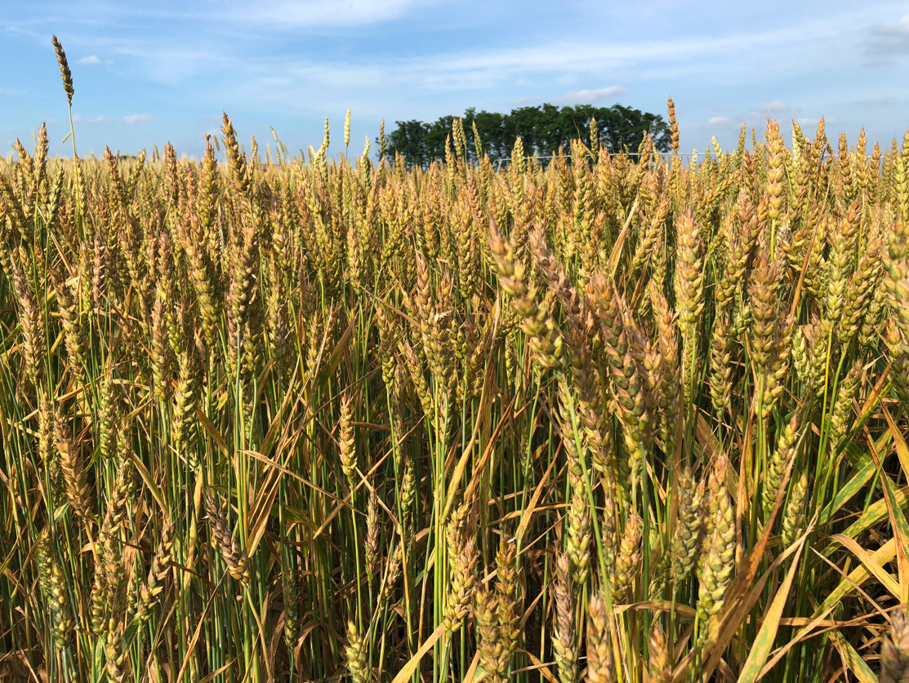
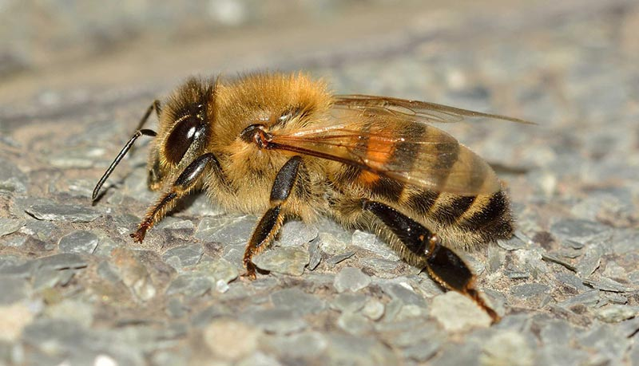
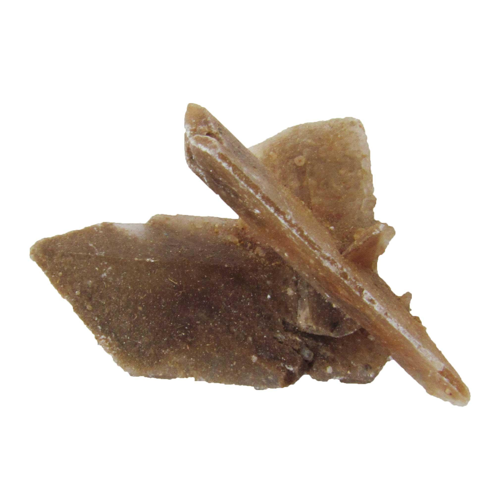
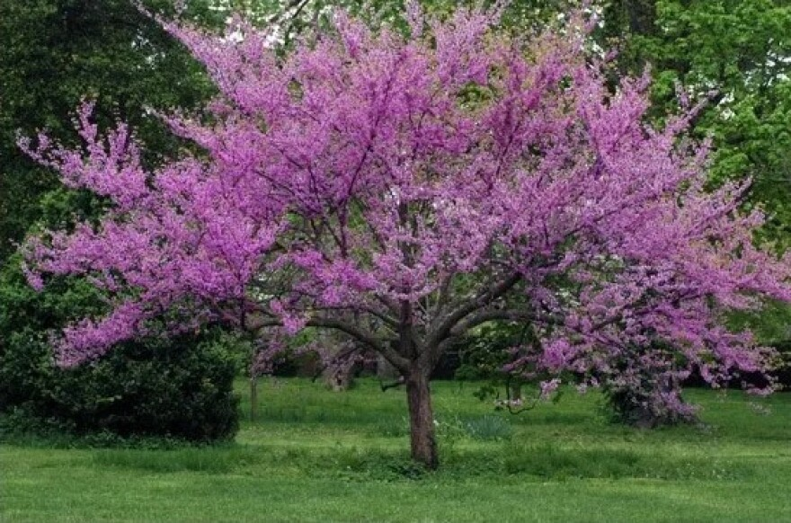
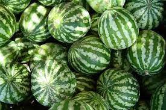
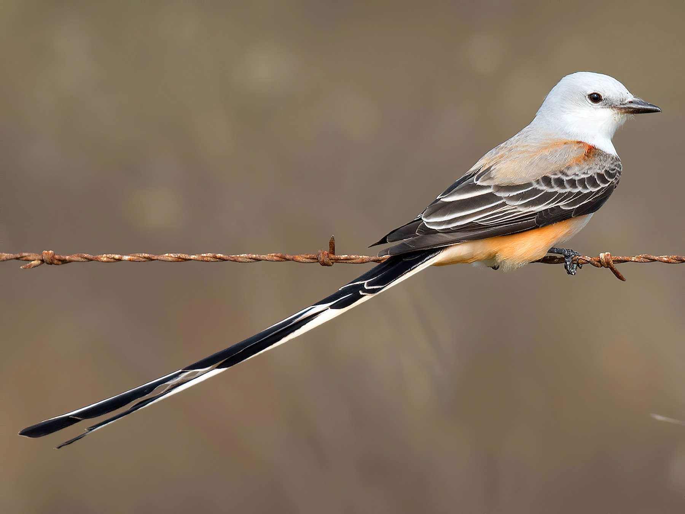

Oklahoma City
Depicting an Osage shield with a calumet (peace pipe), olive branch, crosses, and eagle feathers, artist Louise Funk Fluke created the design to symbolize a people united by peace.
The Oklahoma rose (rose odorata) is the present day state flower of Oklahoma. The flower was adopted as a state symbol in the year 2004. The Oklahoma rose is a deep red colored flower packed with petals. Oklahoma roses have been used in art and literature for centuries, representing everything from passion to death.
Winter wheat
The honeybee
Hourglass selenite
Eastern redbud
Watermelon
3.987 million (2021)
Scissor-tailed flycatcher
Despite a failed first attempt to make the bird the official symbol, the scissortail was eventually chosen for its diet of harmful insects, its Oklahoma-centered nesting range, and by the fortunate circumstance that no other state had designated it.
It reflects the earth, sky, water, agriculture and forest. The colors speak to the seasons. The white star is a powerful symbol of America that is a part of our state seal and on the original flag of the state. Chevrons acknowledge our military.
By: Vicente Rodriguez